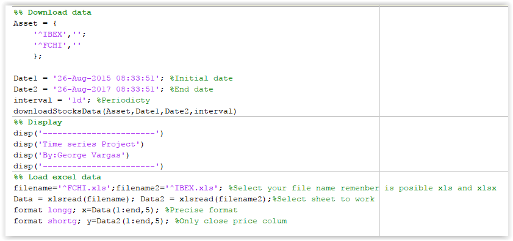
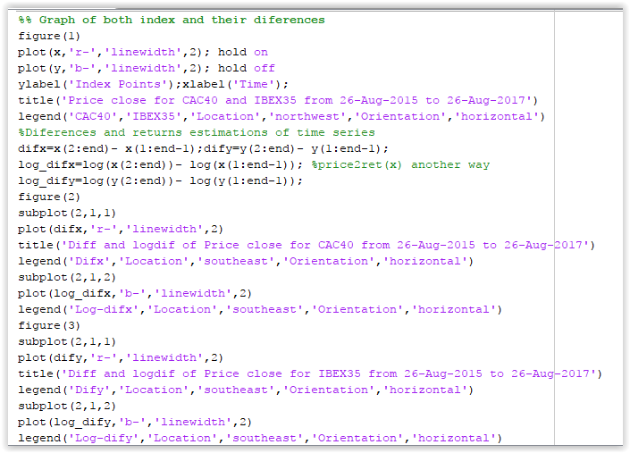
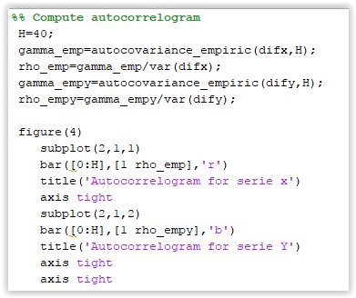
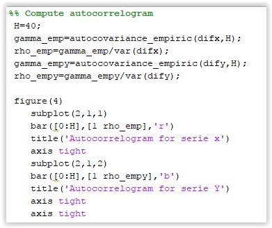

I. Download data from yahoo finance and upload in Matlab software.
In this code you can see a procedure to download the data from yahoo finance with an auxiliary function to connect since MATLAB, it is necessary write in a correct form the name of securities with the same extinction of yahoo finance, the initial date and final date and the periodicity.
In this case, I analyzed two European index IBEX and CAC40 which are the Madrid and Paris Market Index over a period of 2 years between 26 august 2015 and 26 august 2017.

II. Preliminary analysis of the time series.
In this code you can see a procedure to download the data from yahoo finance with an auxiliary function to connect since MATLAB, it is necessary write in a correct form the name of securities with the same extinction that yahoo finance, the initial date and final date and the periodicity.
In this case, I analyzed two European index IBEX and CAC40 which are the Madrid and Paris Market Index over a period of 2 years between 26 august 2015 and 26 august 2017.

 

III. Ordinary linear square and non-parametric regression
If you're experiencing issues and concerns about this website template, join the discussion on our forum and meet other people in the community who share the same interests with you.
Template Details
Design version 4
Code version 4
Website Template details, discussion and updates for this Eco Living Website Template.
Website Template design by Free Website Templates.
Please feel free to remove some or all the text and links of this page and replace it with your own About content.